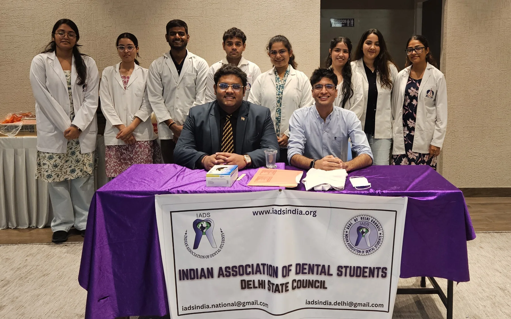

Academic Faculty (Tutor)
Department of Public Health Dentistry, Manav Rachna Dental College · May 2026–present
 OFFICIAL WEBSITE
OFFICIAL WEBSITE
Clinical dentistry created the first questions: why does preventable disease arrive so late, and what can health professionals change before treatment becomes necessary? Community outreach shifted the focus from treating isolated conditions to understanding health literacy, access and prevention.
That inquiry now connects direct patient care, teaching, research, institutional quality work and international professional service. The direction is deliberate: remain grounded in clinical realities while developing the evidence and systems perspective required for population health.
Department of Public Health Dentistry, Manav Rachna Dental College · May 2026–present
Muskan Dental Clinic, Delhi · March 2026–present
Rajasthan University of Health Sciences · completed March 2026
Executive Certificate programme, Indian Institute of Technology Delhi · ongoing from July 2026
PRACTICE · EDUCATION · SYSTEMS
B.D.S. training followed by a rotating resident internship at Darshan Dental College and Hospital.
Teaching, student mentorship and community programmes within Public Health Dentistry, alongside institutional quality and patient-service responsibilities.
Continuing general dental practice so that questions of systems, policy and implementation remain connected to individual patients.

Grounded in dentistry and direct patient care.

Community engagement as a route to earlier intervention.

National and international service centred on collaboration.